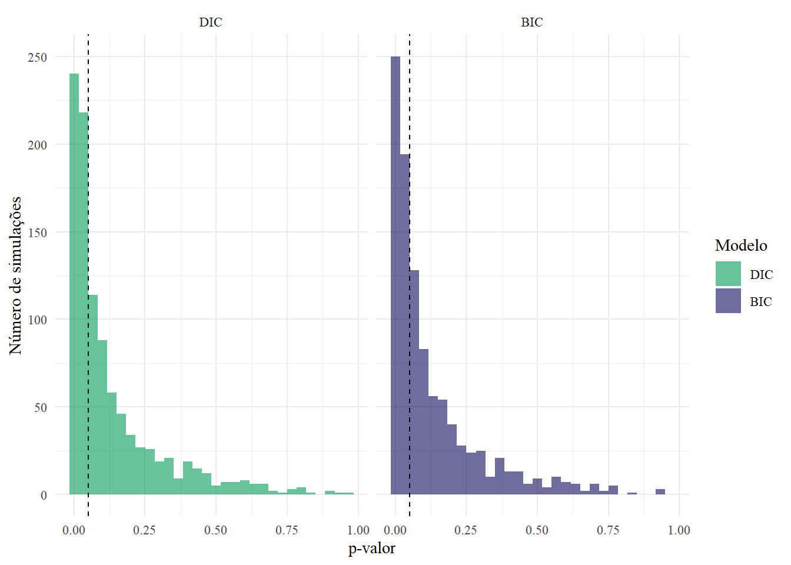
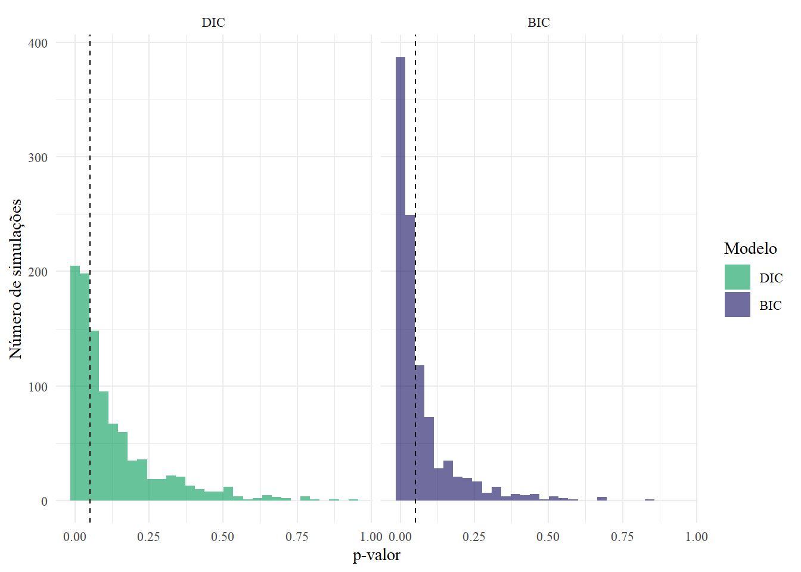
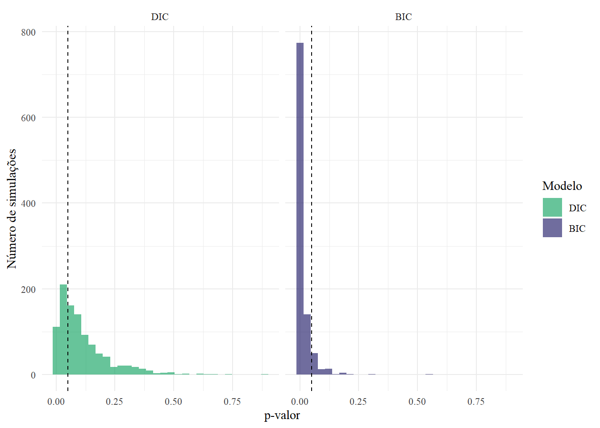
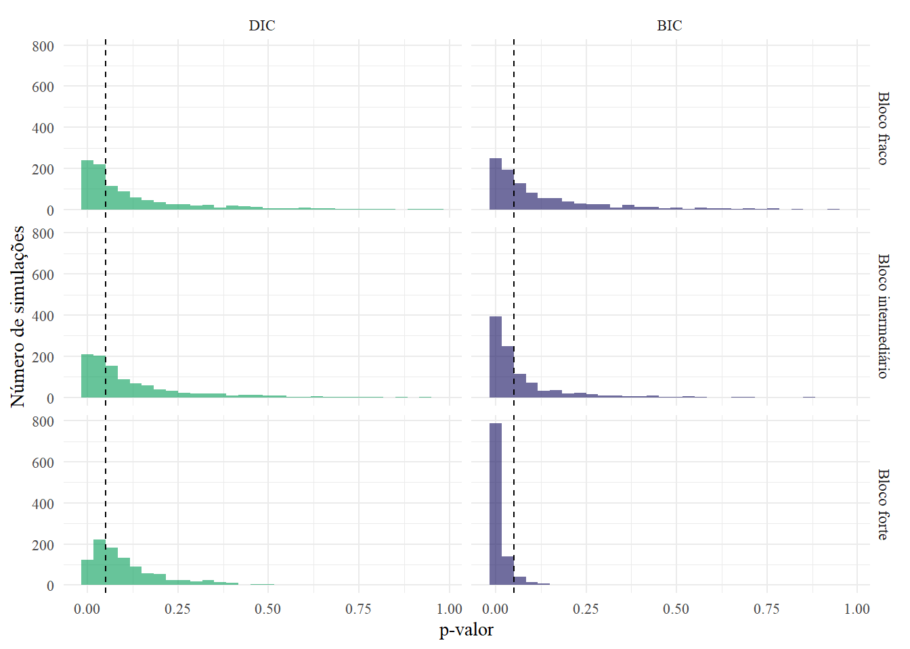
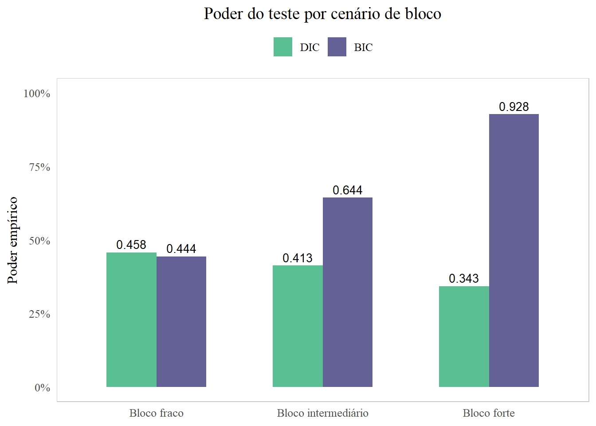
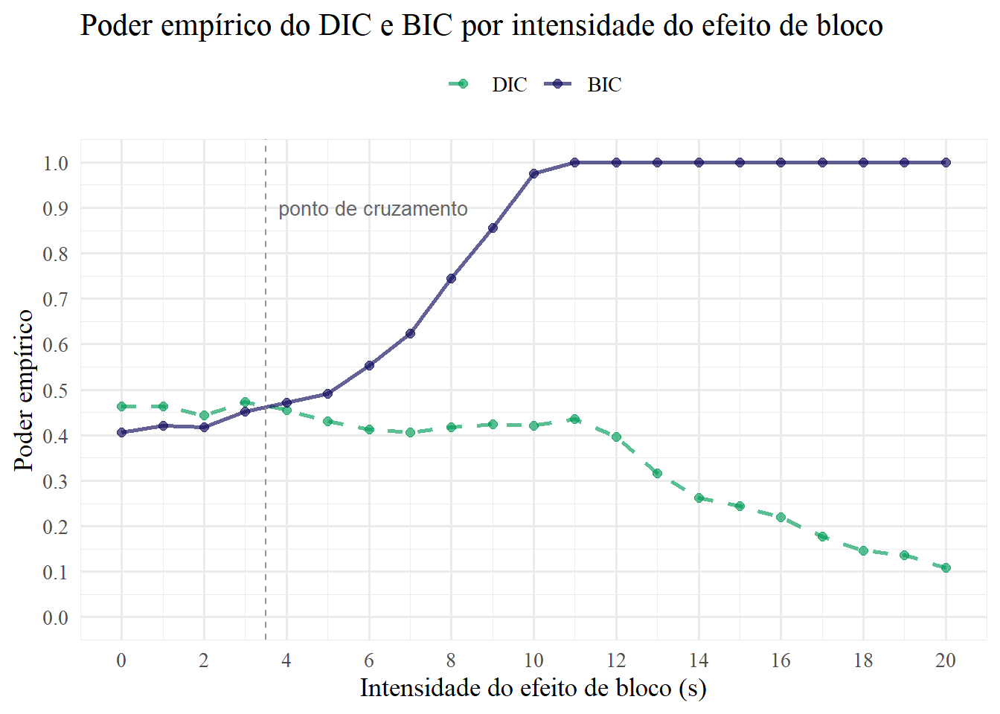
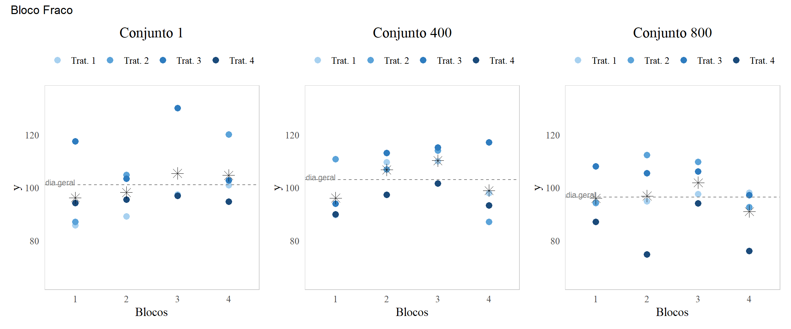
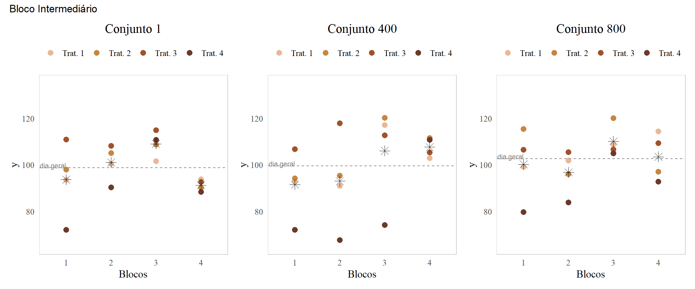
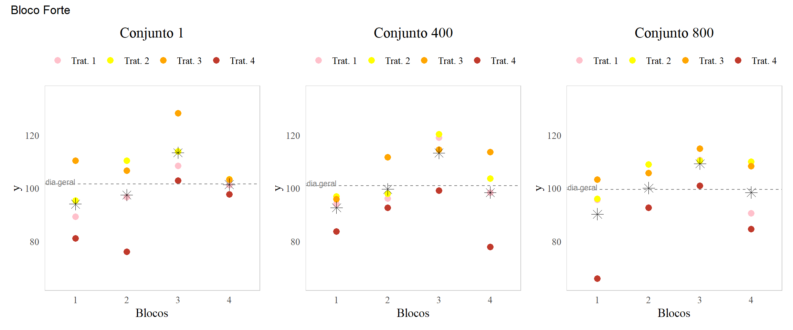
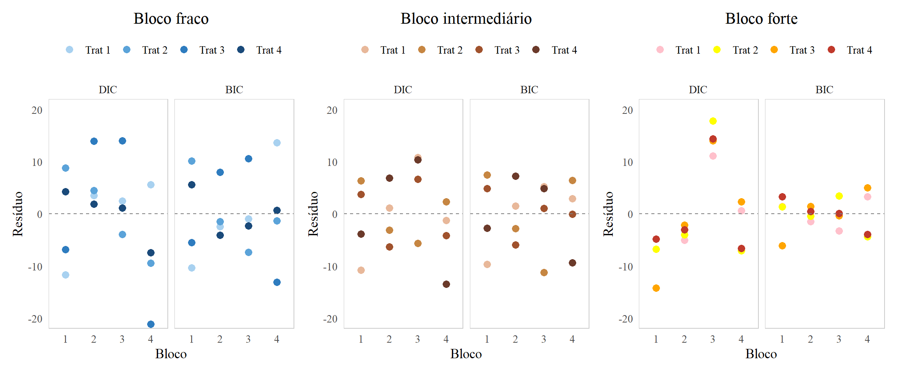

| Fonte de Variação | GL | SQ | QM | F |
|---|---|---|---|---|
| Tratamento | t-1 | SQTrat | QMTrat | QMTrat/QMRes |
| Resíduo | N-1 | SQRes | QMRes | - |
| Total | N-t | SQTotal | - | - |
Poder e ANOVA: uma simulação de desempenho dos delineamentos DIC e BIC
1 Contextualização
Entre os delineamentos mais utilizados no planejamento de experimentos estão o delineamento inteiramente casualizado (DIC) e o delineamento em blocos completos casualizados (BIC). Ambos avaliam os efeitos de tratamento - o que se aplica nas unidades experimentais - por meio da análise de variância (ANOVA). A fim de conduzir um experimento adequadamente, é natural o surgimento de dúvidas em relação à escolha do melhor delineamento, sendo essencial, portanto, compreender o desempenho de cada um dado o contexto específico.
No delineamento inteiramente casualizado, toda variação não explicada pelos tratamentos é absorvida pelo erro. Já o BIC introduz uma estrutura de blocos que, quando relevante, retira do erro uma parcela da variabilidade — reduzindo o quadrado médio dele e aumentando a estatística F do teste. Por essa razão, o BIC pode ter maior poder que o DIC. Porém, quando o efeito de bloco é fraco ou inexistente, o BIC perde graus de liberdade sem qualquer ganho correspondente, penalizando o teste. Dessa forma, nem sempre o delineamento em blocos é a melhor escolha para o determinado experimento, já que não apresenta melhor eficácia que o delineamento inteiramente casualizado em todos os casos.
O poder do teste — probabilidade de rejeitar a hipótese nula quando ela é falsa — depende simultaneamente da magnitude dos efeitos de tratamento, da variabilidade do erro e da relevância da estrutura de blocos. Como esses fatores raramente são conhecidos a priori, a simulação computacional permite investigar como o poder se comporta em múltiplas replicações do experimento com diferenciação dos blocos para um cenário fixado, o qual pode ser alterado de acordo com o que se pretende observar nos resultados de desempenho.
Diante disso, o objetivo deste trabalho é comparar o poder empírico do DIC e do BIC por meio de simulações de Monte Carlo. Para tanto, fixam-se parâmetros e variam-se as intensidades dos efeitos de bloco. Por meio dessas análises, evidencia-se principalmente o ponto em que o delineamento em blocos completos passa a ser preferível ao inteiramente casualizado, para o determinado experimento, ilustrando o resultado das simulações juntamente às demais representações gráficas incluídas.
2 Teoria
2.1 Modelos DIC e BIC
2.1.1 Modelo DIC
\[ Y_{ij} = \mu + \tau_i + \varepsilon_{ij}, \quad i = 1, \dots, k;\; j = 1, \dots, r \]
Onde:
- \(Y_{ij}\): observação do \(i\)-ésimo tratamento na \(j\)-ésima repetição
- \(\mu\): média geral
- \(\tau_i\): efeito do \(i\)-ésimo tratamento
- \(\varepsilon_{ij} \sim N(0, \sigma^2)\): erro aleatório
2.1.2 Modelo BIC
\[ Y_{ij} = \mu + \tau_i + \beta_j + \varepsilon_{ij}, \quad i = 1, \dots, k;\; j = 1, \dots, b \]
Onde:
- \(Y_{ij}\): observação do \(i\)-ésimo tratamento no \(j\)-ésimo bloco
- \(\mu\): média geral
- \(\tau_i\): efeito do \(i\)-ésimo tratamento
- \(\beta_j\): efeito do \(j\)-ésimo bloco
- \(\varepsilon_{ij} \sim N(0, \sigma^2)\): erro aleatório
2.1.2.1 Suposições a serem satisfeitas
\(\varepsilon_{ij}\) independentes
\[ \varepsilon_{ij} \sim N(0,\sigma^2) \]
\[ \sum_{i=1}^{t}\tau_i = 0 \]
\[ \sum_{i=1}^{j}\beta_j = 0 \]
2.1.3 ANOVA: Análise de Variância
A ANOVA decompõe a variação total dos dados em fontes identificáveis, avaliando se a variação atribuída aos tratamentos supera o ruído dos resíduos. Para isso, são calculadas somas de quadrados e quadrados médios, utilizados na obtenção matemática da estatística de teste F, como ilustrado nas tabelas:
| Fonte de Variação | GL | SQ | QM | F |
|---|---|---|---|---|
| Tratamento | t-1 | SQTrat | QMTrat | QMTrat/QMRes |
| Bloco | b-1 | SQBloco | QMBloco | QMBloco/QMRes |
| Resíduo | (t-1)(b-1) | SQRes | QMRes | - |
| Total | tb-1 | SQTotal | - | - |
2.2 Teste de Hipóteses
2.2.1 Efeito de tratamento: DIC e BIC
2.2.1.1 Hipótese nula
Os efeitos de tratamento são iguais
\[ H_0: \tau_1 = \tau_2 = \tau_3 = \tau_4 = 0 \]
2.2.1.2 Hipótese alternativa
Pelo menos um efeito de tratamento difere de zero
\[ H_1: \exists \, i \text{ tal que } \tau_i \neq 0 \] Como se deseja avaliar o poder do teste, a probabilidade de rejeitar a hipótese nula dado que ela é falsa, essa hipótese é rejeitada, portanto considera-se que pelo menos um efeito de tratamento difere de zero.
No caso do BIC, as mesmas hipóteses são consideradas para o efeito do bloco:
2.2.2 Efeito de bloco: BIC
2.2.2.1 Hipótese nula
Os efeitos de bloco são iguais
\[ H_0: \beta_1 = \beta_2 = \beta_3 = \beta_4 = 0 \]
2.2.2.2 Hipótese alternativa
Pelo menos um efeito de bloco difere de zero \[ H_1: \exists \, j \text{ tal que } \beta_j \neq 0 \]
3 Simulações
3.1 Fixando valores
tratamentos <- 4
blocos <- 4
n_obs <- tratamentos * blocos
trat <- rep(1:tratamentos, times = blocos)
bloco <- rep(1:blocos, each = tratamentos)
mu <- 100
# tau arbitrário com efeitos significativos:
tau <- c(0, 4, 8, -12) Em que n_obs é o número de observações, mu é a média geral das observações e tau o efeito de tratamento, necessariamente significativo, já que as diferenças de poder derivam de uma hipótese alternativa verdadeira.
3.1.1 Escolha da variância
# escolha de uma variância arbitrária
sigma2 <- 126Como a variância dos resíduos é superior à variância dos efeitos de tratamento (56), a detecção desses efeitos não é trivial. Ao mesmo tempo, essa razão não é suficientemente extrema — nem pequena a ponto de tornar o poder próximo de 1, nem grande a ponto de torná-lo próximo de 0 — configurando, portanto, um cenário de detecção moderada que favorece a diferenciação do poder empírico entre os delineamentos.
3.1.2 Efeitos de bloco
Para comparar o poder entre os modelos DIC e BIC, três cenários de intensidade dos efeitos de bloco são propostos: fraco, intermediário e forte.
3.1.2.1 Normalidade
É importante sinalizar que considera-se o efeito do j-ésimo bloco como uma variável normal, garantindo a suposição inicialmente apontada para os blocos. Sua distribuição é dada por:
\[ \beta_{j} \sim N(0,s^2) \] Essa escolha é justificada pelo princípio da máxima entropia: a distribuição normal é a menos restritiva, ou seja, qualquer outra distribuição introduziria suposições adicionais às já definidas pelo modelo. E, também, pelo Teorema Central do Limite: à medida que o número de replicações na simulação aumenta, a distribuição amostral do poder empírico converge para uma normal independentemente da distribuição geradora dos betas.
3.1.2.2 Função para gerar betas aleatórios
gera_beta <- function(blocos, desvio, seed = 123) {
set.seed(seed)
beta_orig <- rnorm(blocos, 0, sd = desvio)
beta_orig - mean(beta_orig)
}3.1.2.3 Desvios
Em cada cenário, considera-se uma porcentagem da variância total como a variância do bloco e são gerados os vetores de beta a partir desses desvios.
Além disso, são definidas as variâncias dos erros como consequência de cada porcentagem considerada para os blocos.
# Fraco - 8%
sigma2_bloco_fraco <- 0.08 * sigma2
sigma2_erro_fraco <- 0.92 * sigma2
beta_fraco <- gera_beta(blocos, desvio = sqrt(sigma2_bloco_fraco))
# Intermediário — 40%
sigma2_bloco_inter <- 0.40 * sigma2
sigma2_erro_inter <- 0.60 * sigma2
beta_inter <- gera_beta(blocos, desvio = sqrt(sigma2_bloco_inter))
# Forte — 70%
sigma2_bloco_forte <- 0.70 * sigma2
sigma2_erro_forte <- 0.30 * sigma2
beta_forte <- gera_beta(blocos, desvio = sqrt(sigma2_bloco_forte))
cat("Vetor de valores para os betas:\n");Vetor de valores para os betas:cat("Efeito fraco:\n"); (beta_fraco)Efeito fraco:[1] -2.445044 -1.396380 4.283156 -0.441732cat("Efeito intermediário:\n"); (beta_inter)Efeito intermediário:[1] -5.4672851 -3.1224008 9.5774286 -0.9877428cat("Efeito forte:\n"); (beta_forte)Efeito forte:[1] -7.232538 -4.130548 12.669747 -1.3066613.2 Testes de poder
3.2.1 Efeito de bloco fraco
3.2.1.1 Cálculo do poder
set.seed(123)
sim_bfraco <-
replicate(1000, {
erro <- rnorm(n_obs, 0, sqrt(sigma2_erro_fraco))
y <- mu + tau[trat] + beta_fraco[bloco] + erro
p_bic <- summary(aov(y ~ factor(trat) + factor(bloco)))[[1]]["factor(trat)", "Pr(>F)"]
p_dic <- summary(aov(y ~ factor(trat)))[[1]]["factor(trat)", "Pr(>F)"]
c(bic = p_bic < 0.05, dic = p_dic < 0.05,
p_bic = p_bic, p_dic = p_dic)
})
cat("Poder para efeito de bloco fraco:\n");Poder para efeito de bloco fraco:cat("DIC:\n"); (poder_dic_bfraco <- mean(sim_bfraco["dic", ]))DIC:[1] 0.458cat("BIC:\n"); (poder_bic_bfraco <- mean(sim_bfraco["bic", ]))BIC:[1] 0.444No cenário de bloco fraco, os dois modelos apresentam poder similar, com o DIC levemente superior ao BIC. Quando o efeito de bloco é irrelevante, o BIC não se beneficia do controle local que propõe e a perda de graus de liberdade para estimar o efeito de bloco prejudica o seu poder, o que explica esse resultado.
3.2.1.2 Distribuição p-valor
pvalores_fraco <- data.frame(
p = c(sim_bfraco["p_dic", ], sim_bfraco["p_bic", ]),
Modelo = rep(c("DIC", "BIC"), each = 1000)
)
pvalores_fraco$Modelo <- factor(pvalores_fraco$Modelo, levels = c("DIC", "BIC"))
ggplot(pvalores_fraco, aes(x = p, fill = Modelo)) +
geom_histogram(alpha = 0.6, bins = 30, position = "identity") +
geom_vline(xintercept = 0.05, linetype = "dashed") +
scale_fill_manual(values = c(BIC = "#110C5E", DIC = "#029C57")) +
labs(x = "p-valor", y = "Número de simulações") +
facet_wrap(~Modelo) +
theme_minimal(base_family = "serif")
O gráfico mostra que, no cenário de bloco fraco, aproximadamente 40% dos p-valores de ambos os modelos ficaram abaixo de alpha = 0,05, indicando poder moderado para os dois delineamentos, como verificado.
3.2.2 Efeito de bloco intermediário
3.2.2.1 Cálculo do poder
Poder para efeito de bloco intermediário:DIC:[1] 0.413BIC:[1] 0.644No cenário de bloco intermediário, o BIC apresenta poder consideravelmente superior ao DIC. Quando o efeito de bloco é moderado, o DIC absorve essa variação no resíduo, inflando o quadrado médio do erro e reduzindo a estatística F. Já o BIC isola o efeito de bloco antes de testar os tratamentos, reduzindo o resíduo e aumentando o poder do teste — evidenciando a vantagem do controle local quando a estrutura de blocos é relevante.
3.2.2.2 Distribuição p-valor

O gráfico mostra que, no cenário de efeito de bloco intermediário, aproximadamente 64% dos p-valores do BIC ficam abaixo do nível de significância alpha = 0,05 contra 41% no DIC. A concentração de p-valores pequenos é visivelmente maior para o BIC, confirmando que o controle local melhora substancialmente a capacidade de detectar o efeito de tratamento quando o bloco tem relevância moderada.
3.2.3 Efeito de bloco forte
3.2.3.1 Cálculo do poder
Poder para efeito de bloco forte:DIC:[1] 0.343BIC:[1] 0.928No cenário de bloco forte, a diferença entre os modelos é bem significativa, o BIC atinge poder de 0,928, detectando o efeito de tratamento em quase todas as simulações, enquanto o DIC cai para 0,343 — menos da metade do poder do BIC. Quando o efeito de bloco é grande, o DIC absorve toda essa variação no resíduo, inflando o quadrado médio do erro a ponto de tornar o teste de tratamento quase incapaz de detectar diferenças reais. O BIC, ao isolar e remover o efeito de bloco antes de testar os tratamentos, preserva o poder do teste como observado nos cenários anteriores.
3.2.3.2 Distribuição p-valor

O gráfico mostra que, no cenário de bloco forte, a maioria dos p-valores no modelo BIC se concentra abaixo de 0,05. Já para DIC, quase todos os valores estão acima de 0,05, ou seja, O DIC apresenta poder significantemente inferior ao BIC.
3.2.4 Comparação das distribuições p-valor

3.2.5 Análise de convergência
| replicacoes | poder_dic | poder_bic |
|---|---|---|
| 100 | 0.460 | 0.430 |
| 1000 | 0.451 | 0.440 |
| 10000 | 0.445 | 0.445 |
| replicacoes | poder_dic | poder_bic | |
|---|---|---|---|
| 4 | 100 | 0.340 | 0.600 |
| 5 | 1000 | 0.423 | 0.643 |
| 6 | 10000 | 0.411 | 0.636 |
| replicacoes | poder_dic | poder_bic | |
|---|---|---|---|
| 7 | 100 | 0.360 | 0.870 |
| 8 | 1000 | 0.333 | 0.909 |
| 9 | 10000 | 0.354 | 0.916 |
Em todos os cenários, os valores de poder empírico são aproximados ao valor real conforme o número de réplicas aumenta. De 100 para 10000 replicações, a variação é pequena, o que sustenta o uso padrão de 1000 repetições como suficiente para estimativas e resultados confiáveis.
3.2.6 Poder por cenário de bloco

3.3 Escolher DIC ou BIC: poder por cenário de intensidade de bloco
set.seed(123)
intensidades <- seq(0, 20, by = 1)
resultados <- lapply(intensidades, function(s) {
sigma2_bloco <- s^2 # variância de bloco para esse s
sigma2_erro <- max(sigma2 - sigma2_bloco, 1) # erro puro = total - bloco
sim <- replicate(1000, {
beta_orig <- rnorm(blocos, 0, sd = s)
beta <- beta_orig - mean(beta_orig)
erro <- rnorm(n_obs, 0, sqrt(sigma2_erro)) # erro particionado
y <- mu + tau[trat] + beta[bloco] + erro
p_bic <- summary(aov(y ~ factor(trat) + factor(bloco)))[[1]]["factor(trat)", "Pr(>F)"]
p_dic <- summary(aov(y ~ factor(trat)))[[1]]["factor(trat)", "Pr(>F)"]
c(bic = p_bic < 0.05, dic = p_dic < 0.05)
})
data.frame(
intensidade = s,
poder_dic = mean(sim["dic", ]),
poder_bic = mean(sim["bic", ])
)
})
df <- do.call(rbind, resultados)
4 Conclusão acerca dos resultados apresentados
Por meio das simulações a partir do determinado cenário, é possível concluir que a escolha entre os delineamentos DIC e O BIC depende diretamente da relevância dos blocos no experimento. Quando o efeito de bloco é irrelevante, o DIC apresenta poder ligeiramente superior — o BIC consome graus de liberdade sem benefício correspondente. Conforme a intensidade do bloco aumenta, o DIC perde poder progressivamente enquanto o BIC permanece estável, pois isola o efeito de bloco antes de testar os tratamentos.
O ponto de cruzamento em s aproximadamente igual a 3.5 delimita a fronteira a partir da qual o BIC passa a ser preferível nesse caso, evidenciando que, em experimentos com heterogeneidade relevante entre unidades experimentais, o controle local é essencial para preservar o poder do teste.
5 Análise das observações
Dessas simulações, considera-se aleatoriamente 3 conjuntos de dados de cada cenário de bloco para visualização.
5.1 Vetores de y derivados das simulações propostas
set.seed(123)
sim_y_forte <- replicate(1000, {
erro <- rnorm(n_obs, 0, sqrt(sigma2_erro_forte))
mu + tau[trat] + beta_forte[bloco] + erro
})
sim_y_fraco <- replicate(1000, {
erro <- rnorm(n_obs, 0, sqrt(sigma2_erro_fraco))
mu + tau[trat] + beta_fraco[bloco] + erro
})
sim_y_inter <- replicate(1000, {
erro <- rnorm(n_obs, 0, sqrt(sigma2_erro_inter))
mu + tau[trat] + beta_inter[bloco] + erro
})5.2 Função para gerar os gráficos
plot_bloco <- function(sim_matrix, col, titulo = "Observações por bloco", cores) {
df_obs <- data.frame(
y = sim_matrix[, col],
trat = factor(trat),
bloco = factor(bloco)
)
df_media <- aggregate(y ~ bloco, data = df_obs, FUN = mean)
media_geral <- mean(df_obs$y)
ggplot(df_obs, aes(x = bloco, y = y)) +
geom_point(aes(color = trat), size = 3) +
geom_point(data = df_media, aes(x = bloco, y = y),
shape = 8, size = 4, color = "black") +
geom_hline(yintercept = media_geral,
linetype = "dashed", color = "gray50") +
annotate("text", x = 0.6, y = media_geral + 1,
label = "Média geral", size = 3.0, color = "gray50") +
scale_color_manual(values = cores,
labels = paste("Trat.", 1:4)) +
labs(title = titulo, x = "Blocos", y = "y", color = NULL) +
theme_minimal(base_size = 13, base_family = "serif") +
theme(legend.position = "top",
plot.title = element_text(hjust = 0.5),
panel.grid.major = element_blank(),
panel.grid.minor = element_blank(),
panel.border = element_rect(color = "gray80", fill = NA, linewidth = 0.5))
}5.3 Gráficos das observações



5.4 Função para gerar os gráficos
set.seed(123)
plot_residuos <- function(sim_matrix, col, titulo = "Resíduos por tratamento", cores) {
y <- sim_matrix[, col]
df <- data.frame(
y = y,
trat = factor(trat),
bloco = factor(bloco)
)
fit_dic <- aov(y ~ factor(trat))
fit_dbc <- aov(y ~ factor(trat) + factor(bloco))
df_res <- data.frame(
residuo = c(residuals(fit_dic), residuals(fit_dbc)),
modelo = rep(c("DIC", "BIC"), each = nrow(df)),
trat = rep(df$trat, 2),
bloco = rep(df$bloco, 2)
)
df_res$modelo <- factor(df_res$modelo, levels = c("DIC", "BIC"))
ggplot(df_res, aes(x = bloco, y = residuo, color = trat)) +
geom_point(size = 3) +
geom_hline(yintercept = 0, linetype = "dashed", color = "gray50") +
facet_wrap(~ modelo) +
scale_color_manual(values = cores,
labels = paste("Trat", 1:4)) +
labs(title = titulo, x = "Bloco", y = "Resíduo", color = NULL) +
theme_minimal(base_size = 13, base_family = "serif") +
theme(legend.position = "top",
plot.title = element_text(hjust = 0.5),
panel.grid.major = element_blank(),
panel.grid.minor = element_blank(),
panel.border = element_rect(color = "gray80", fill = NA, linewidth = 0.5))
}5.5 Gráfico de resíduos
